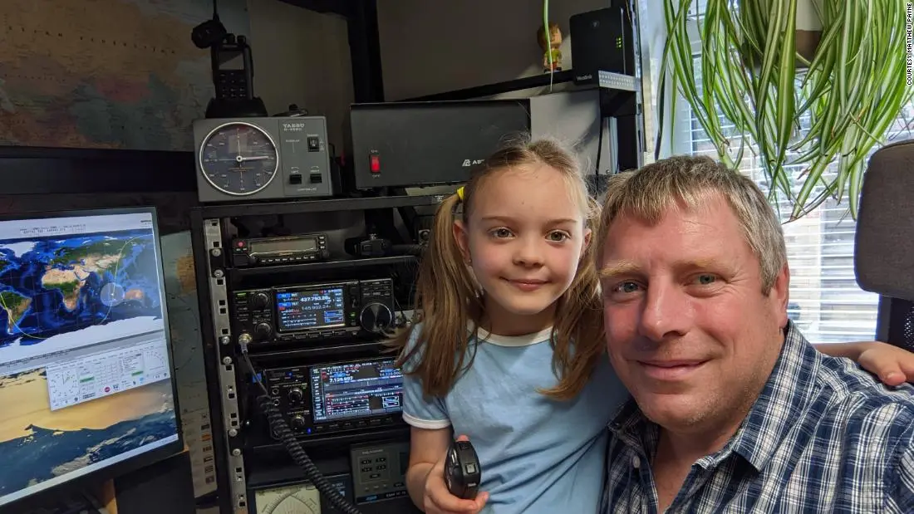

© 2022 by Aisyah Nurul Afyna
Dibantu sang ayah, gadis 8 tahun asal Inggris, bernama Isabella Payne berhasil menangkap panggilan cepat ke Stasiun Luar Angkasa Internasional (ISS).
Wah keren banget ya!
Isabella berkomunikasi dengan komandan NASA SpaceX Crew-4, Kjell Lindgren. Percakapan berlangsung selama 30 detik dan diunggah akun Twitter riset ISS, 24 Agustus lalu.
Dalam unggahan tersebut Isabella memperkenalkan diri dan usianya, kepada astronot NASA, Kjell. Komandan SpaceX tersebut menjawab panggilan dengan mengatakan “Selamat datang di Stasiun Angkasa Internasional.”
Radio di ISS adalah proyek Amateur Radio on the International Space Station (ARISS) yang dirancang untuk melibatkan banyak orang dalam hal sains dan teknologi melalui komunikasi radio amatir.
Walau tak bercita-cita menjadi astronot, Isabella mengaku ingin jadi spesialis komunikasi di sebuah badan antariksa. Isabella telah memiliki bakat tersebut. Dan hebatnya, ia berhasil menghubungi astronot meski baru berumur 8 tahun!
Wah sebuah pencapaian yang membanggakan! Kalo kalian punya pencapaian apa pas umur 8 tahun?
Mimin sih umur segitu baru bisa hitung-hitungan perkalian pembagian wkwk…
Comments